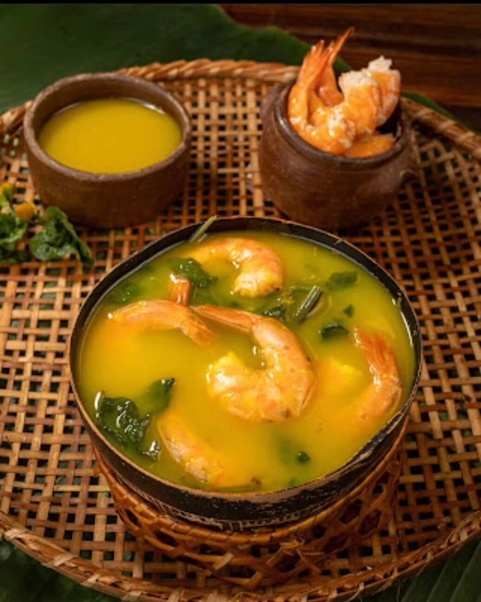
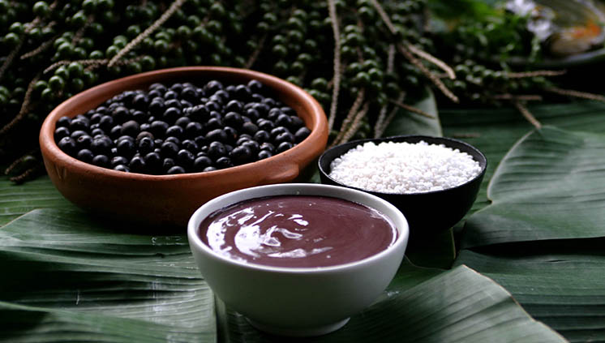
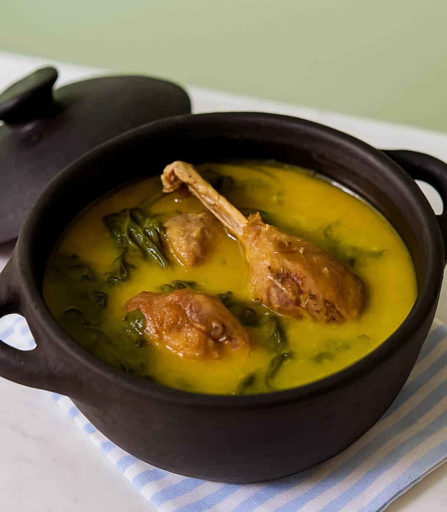

Meu primeiro post
Por Yasmim Ducato, Eloisa Olivera e Angelina Cardozo do 1°MSeja bem vindo ao nosso blog! Aqui vamos falar sobre três comidas tìpicas da Amazônia, e como são feitas e suas origens.
Tacacá



Vou falar sobre a culinaria da Amazônia
Seja bem vindo ao nosso blog! Aqui vamos falar sobre três comidas tìpicas da Amazônia, e como são feitas e suas origens.


